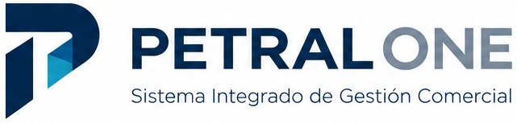

| Fase / Sistema | Rol Clave & Pregunta Central | Capacidades Matemáticas & Datos | Valor de Negocio Directo | Estado |
|---|---|---|---|---|
|
PETRAL ONE Forecasting & Budget |
¿Cuánto debe costar y rendir el viaje? Estimación anticipada, instantánea y rigurosa de cotizaciones SPOT y contratos de volumen (COA). |
• Matrices tarifarias P × Q portuarias oficiales. • Modelado teórico de bunker (MDO/IFO) en mar y puerto. • Presupuesto base inmutable (*Voyage Ledger*). • Gobernanza: Organigrama y MOF integrado (6 puestos clave). |
Velocidad comercial extrema, cero errores de cálculo tarifario y presupuesto de viaje blindado. | En Producción |
|
PETRAL TWO Actuals & Audit Forense |
¿Cuánto costó realmente y dónde están los desvíos? Liquidación real con ajuste BAF por bunker consumido, auditoría de facturas y control de maniobras. |
• Cálculo BAF Automatizado: Reajuste de flete por costo de stock en tanques + spot bunker. • Monitoreo de Consumo Real del buque. • Cuaderno Digital de Hechos (Puente): Timing real de maniobras de carga/descarga vs. liquidaciones. • Auditoría digital de facturas PDF de agencias y terminales. |
Recuperación íntegra de flete por BAF, fin de demoras ficticias y conciliación de cuentas de escala. | Siguiente Fase |
|
PETRAL THREE Optimization & Fleet AI |
¿Qué decisiones óptimas pudieron maximizar el año? Análisis retrospectivo y prescriptivo de la flota completa (~30 viajes/año de B/M Moquegua y B/M Tablones). |
• Modelo multivariado de transporte marítimo + tierra. • Acople con acopio en silos, fajas y camiones mineros. • Simulación de escenarios *what-if* contrafactuales. |
Maximización del margen global anual de la flota y reducción drástica de tiempos muertos en fondeo. | Visión Futura |
| Dimensión del Problema | La Realidad Previa (El Dolor en Excel) | La Solución Operativa en PETRAL ONE |
|---|---|---|
| Dispersión Tarifaria Portuaria | Múltiples versiones de archivos Excel circulando por correo, con tarifas desactualizadas de remolcaje, práctico, amarre y uso de muelle en puertos del Pacífico. | Matriz P × Q Determinista Centralizada: Tarifas oficiales auditadas para Callao, Ilo, Matarani, Pisco y San Nicolás, calculadas automáticamente según TRB, eslora y calado. |
| Consumo Teórico de Bunker | Estimaciones empíricas de combustible en Excel sin diferenciar con rigor el consumo por milla navegada a velocidad económica vs. el consumo de generadores auxiliares en puerto. | Modelado Determinista de Consumo Base: Curvas de consumo específicas por buque para navegación y estadía portuaria; homologación canónica unificada (MGO ≡ MDO) para fijar el costo base del viaje. |
| Agilidad Comercial ante Clientes | Cotizar un viaje SPOT o evaluar un cambio de tonelaje tomaba horas de recálculo manual, retrasando las respuestas comerciales a mineras y fletadores. | Multicotizador SPOT Instantáneo: Simulación en tiempo real de márgenes de contribución, TCE (*Time Charter Equivalent*) y flete base requerido por tonelada métrica en segundos. |
| Trazabilidad Financiera | Inexistencia de un presupuesto formal congelado antes del inicio de viaje; imposibilidad de auditar contra qué números se autorizó zarpar. | Voyage Ledger Oficial: Generación del *Budget* oficial inmutable con desglose de ingresos proyectados, costos portuarios P × Q, combustible base y margen operativo. |
| Área / Código MOF | Puesto & Responsable | Misión & Entregables en PETRAL ONE | Permisos ERP & Métricas KPI |
|---|---|---|---|
| Dirección General MOF-DIR-01 |
Fernando Harten Gerente General |
Aprobación del *Voyage Ledger* oficial previo a la zarpada, validación de políticas de margen de contribución y gobernanza integral del dato naval. | Nivel: Control Total (Aprobador) KPI: 100% de viajes con Budget formal cerrado. |
| Gerencia Comercial MOF-COM-01 |
Iosef Zavala Gerente Comercial |
Modelado de cotizaciones SPOT en el Multicotizador, administración de contratos COA y fijación de términos contractuales base de flete. | Nivel: Editor Comercial KPI: Emisión de cotizaciones en < 5 minutos. |
| Operaciones Flota MOF-OPS-01 / 02 |
M. E. Castro (Moquegua) Jorge Neyra (Tablones) |
Ingreso de singladuras, verificación de distancias náuticas, horas estimadas de maniobra/estadía y curvas de consumo teórico por buque. | Nivel: Editor Operativo KPI: Cero inconsistencias en calados y tiempos. |
| Finanzas & Costos FDA MOF-FIN-01 / 02 |
Sandra Gálvez (Liq.) Patricia Rueda (FDA) |
Custodia de matrices tarifarias P × Q de puertos del Pacífico, homologación canónica de bunker y control maestro de cuentas de escala. | Nivel: Editor Maestros / Auditor KPI: 100% de tarifas portuarias homologadas. |
/mof-manual).
| Pilar de Liquidación Real | La Realidad Actual (Auditoría Manual y Desvíos) | La Solución Automatizada en PETRAL TWO |
|---|---|---|
| Automatización del Cálculo BAF | El cálculo de ajuste de flete por BAF se hace en planillas sueltas post-viaje; riesgo de no trasladar al flete el incremento exacto del costo de combustible consumido. | Cálculo BAF Dinámico por Stock + Spot: Al liquidar el viaje, el sistema toma el costo ponderado del stock en tanques del buque más las compras spot realizadas, subiendo la tarifa de flete en la proporción contractual exacta. |
| Monitoreo del Consumo Real de Barco | Dificultad para saber si el consumo de fuel y diesel se desvió por mal tiempo, velocidad excesiva o fallas de generadores frente al forecast original de PETRAL ONE. | Control de Consumo Medido vs. Teórico: Ingesta de los *soundings* diarios de tanques y reportes de máquinas; comparación directa de toneladas reales quemadas vs. el presupuesto base. |
| Cuaderno de Hechos Digital en el Puente | Terminales y agencias emiten liquidaciones con tiempos de maniobra inflados o demoras imputadas injustamente al buque, sin un respaldo horario fidedigno. | Digital SOF desde el Puente de Mando: Registro en tiempo real del *timing* exacto de práctico, remolcadores, amarre y cada parada de carga/descarga, sirviendo de prueba pericial inalterable contra las liquidaciones de terminal. |
| Auditoría Forense de Facturas PDF | Revisión manual extenuante de decenas de PDFs de proveedores portuarios para verificar si las tarifas coinciden con los acuerdos contractuales. | Cotejo Forense Automatizado & Varianzas: Extracción digital de facturas PDF, cruce automático con tarifas maestras y semáforo financiero: Budget ONE vs. Actual TWO. |
| Dimensión Multivariada | Factores Complejos en Juego (Caso Flota 2026: ~30 Viajes/Buque) | Respuesta Analítica en PETRAL THREE |
|---|---|---|
| Coordinación de Buques | Operación simultánea de los buques de la flota (B/M Moquegua y B/M Tablones) realizando cerca de 30 viajes anuales cada uno, con restricciones de calado, velocidad económica y ventanas de marea. | Optimización de Ruteo y Velocidad: Programación sincronizada para evitar solapamientos y minimizar esperas en fondeadero. |
| Activos e Infraestructura en Tierra | El buque no opera solo: depende de la capacidad de acopio en silos de puerto, el caudal de fajas transportadoras, la rotación de camiones mineros y la disponibilidad de patios. | Gemelo Logístico Tierra-Mar: Modelado integral de cuellos de botella terrestres para prever desabastecimientos de stock. |
| Compromisos con Clientes Mineros | Cumplimiento de programas estrictos de contratos COA con gigantes de la industria (Nexa Resources, Southern Peru - SPCC), balanceando penalidades por demora contra rentabilidad de viajes SPOT. | Asignación Óptima de Capacidad: Algoritmos de investigación de operaciones para maximizar el margen anual ponderado. |
| Variables Estocásticas y Clima | Eventos imprevisibles como cierres de puerto por oleaje anómalo (Bravezas), congestión imprevista de muelle o saltos súbitos en el precio del bunker. | Simulación Contrafactual: Análisis de escenarios retrospectivos ("¿Qué hubiese ocurrido si...?") y recomendaciones prescriptivas. |
| Puesto Oficial (MOF) | Responsable Clave | Misión en PETRAL ONE (El Compromiso Hoy) | Beneficio Futuro en TWO & THREE |
|---|---|---|---|
| Dirección General MOF-DIR-01 |
Fernando Harten Gerente General |
Revisar el *Voyage Ledger* oficial antes de autorizar viajes, estableciendo metas de margen de contribución base y gobernanza del dato. | Visibilidad en tiempo real del P&L naval, gobernanza sin dispersión y optimización anual de la flota en THREE. |
| Gerencia Comercial MOF-COM-01 |
Iosef Zavala Gerente Comercial |
Ingresar cotizaciones SPOT y contratos COA con rigor; validar clientes, puertos y tarifas base acordadas. | Reajuste automático de flete por BAF real en la liquidación de TWO y reportes ejecutivos de rentabilidad por cliente. |
| Operaciones Flota MOF-OPS-01 / 02 |
M. E. Castro (Moquegua) Jorge Neyra (Tablones) |
Cargar distancias de singladura, consumos teóricos base y horas estimadas de maniobra y estadía portuaria por buque. | Auditoría automática de facturas portuarias confrontadas contra el Cuaderno Digital de Hechos del puente de mando. |
| Finanzas & Costos FDA MOF-FIN-01 / 02 |
Sandra Gálvez (Liquidaciones) Patricia Rueda (Costos & FDA) |
Custodiar las matrices tarifarias P × Q de los puertos, homologación de bunker y cuentas maestras de escala. | Cierre contable de viaje en minutos, eliminación de fugas en cuentas de escala y conciliación Budget vs. Actual. |